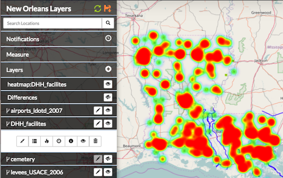

Analyzing data with Exchange¶
Working within the attribute table¶
In the Editing and Version Management section, you learned how to add data to the attribute table, and how to edit the attributes of a feature on the map. Here we will discuss how to manipulate the data from within the attribute table to find exactly what you need.
To open the Table View, click on a layer, and select the Show Table button.

All of the data provided for this layer will display in the Table View, though you may need to scroll up and down, or left and right to view all of the data on the page. Select the left or right arrow buttons to move to a different page.

View attribute statistics¶
The View Statistics feature helps you visualize the data within an attribute by presenting it as either a bar graph or a pie chart. This information can be useful when you want to quickly see how data within a given attribute is distributed, or how many unique categories are represented within a single attribute.
- Click the attribute title for the data you’d like to display.

- Click the View Statistics button to open the summary statistics chart.

The attribute categories will be broken out into a bar graph, where each unique value in the field is represented by a single bar (or slice, if you are using a pie chart). The graph will show each of the unique values on the bottom axis, and the number of times that value is represented in the attribute table on the left side of the graph.
The View Statistics feature will give you a count of all of the features within the layer, the number of features with data populated in the attribute you are examining, and the number of unique values of the attribute itself.
Using the chart below as an example, you can see the layer has a total of 1,460 features. The FacilityTO attribute (used to create the graph) has data populating each of those features. There are eight unique values within the FacilityTO attribute field, and the bar represents the number of times that value was entered for the attribute.

- Click the Show Pie Chart button to change the display to a pie chart.


Create a heat map¶
A heat map is a visual representation of your data, and allows you to see where your data is concentrated.
- Select a point feature layer from your layers list.
- Click the Show heatmap button to create a heat map layer.

On the heat map, red indicates a high area of data concentration.
In this example, the heat map indicates the areas where the Department of Health facilities are concentrated in Louisiana. The red areas are areas of higher population.
Search all attributes¶
The Search All Fields search examines all of the attributes in a layer, and returns all features that have your search term in any of its attribute fields. It is a simple search that will find results from any location.

- Type a search term in the Search All Fields text box.
- Click the magnifying glass button. Your results will display in the attribute table.
NOTE: You can use the * or the ? as wildcards if you aren’t sure of the exact spelling of a search term. The * matches any number of characters. You can use the asterisk (*) anywhere in a character string. For example, wh* will find what, wheat, and whale, but not awhile or watch. The ? will match a single character in a specific position. A search for r?t will return rat or rot, but not rest or retract. A search of a partial word, or an open ended search, will return results containing those characters. Typing abr will return abrams and candelabra. You may also use a combination of the two. To clear the search, click the magnifying glass or the X button.
Advanced filters¶
Advanced filters can help with your analysis by returning only the features you want to see. Whether you are looking for data matching a specific attribute, or events occurring within a certain time period, using an advanced filter will help you find what you need.
Select the Advanced Filters button in the Table View to open the Filter by Attribute options.
Select an attribute type, and click the drop down menu to select whether you would like to filter for an exact match, or a term that would be contained within the results.
Add your search term to the text box, and click the Apply Filters button. Repeat these steps to add additional filters, and refine your search even more.

You are also able to filter attributes with dates or numbers by using either an exact match, or setting a range.
Click the drop down menu to select either Exact Match or Range. Type the date or number in the text box for an exact match, or select the dates/times using the calendar to establish a range.
Select the Apply Filters button.

Your results will display in the Table View. To clear your results, and return to the complete list of features, select the Clear Filters button. Click the Advanced Filters button again to return to Search All Fields.
Filter features using spatial filters¶
Spatial filters are used to select features from one layer based on their location in relation to features from another layer. The overlapping, or intersecting, data will be filtered in the attribute table, and can be used for additional analysis.
Click a feature on the map to select it. This will set the boundaries for the filter, and all of the returned data will be within this feature.
Click the filter button to Use this feature in a spatial filter. The selected feature will change colors.
Click a feature from the layer you want to filter, and click the Show Table button in the information window. This will open the attribute table for the entire layer. All of the features in this layer will display in the attribute table.
Click the Spatial Filter button in the Table View. This filters the data to display only the features intersecting the original feature.

Filter intersecting feature attributes
You can expand your spatial filter by selecting additional features from your layer. The results will be displayed in your attributes table.

In the first example, there were 15 results using the spatial filter. By selecting additional features, there are now 42 results that intersect the layer.
A spatial filter can also be created using an individual point with a given radius, allowing you to see how many features from a second layer fall within that radius.
Click a point on the map from the desired layer. This will be the base point. A blue circle will highlight the point.
Click the filter button to Use this feature in a spatial filter. The selected feature will change colors. Enter the desired radius in meters when prompted. Click the Add Spatial Filter button.
Click a feature from the layer you want to filter, and click the Show Table button in the information window. This will open the attribute table, which will include all layer features.
Click the Spatial Filter button in the Table View. This filters the data to display only the features within the radius on the original point.

This example shows how many Department of Health facilities are within a 4000 meter radius of central Lake Charles, LA. The spatial filter narrows the results down to 17 facilities out of 1458.
You can edit the geometry of an existing spatial filter to adjust the size of the filter area.
Select a spatial filter feature on the map, and click the Edit Geometry button. The selected feature will change colors and the Editing Geometry window will open.
A blue dot will appear over the point on the feature to be moved.
Click and drag the point to its new location. Repeat this process until all of the points have been moved to their new location.
Select the Accept Feature button to finish your edits, and apply the new shape to your spatial filter.

Delete a spatial filter¶
Once you are finished with your spatial filter, you may want to clear the results, and remove the filter from your map.
- From the Table View of your filtered results, select the Spatial Filter button. This will clear the filter, and show all features within the layer. Close the Table View window.
- Click on the feature you used in your spatial filter, and select the Delete Feature button. Confirm that you want to delete the feature.
Combine filters for deeper analysis¶
Combining a filter by attribute and a spatial filter allows you to dig even deeper into your data to provide better analysis. Once you have completed your spatial filter, you can use an Advanced Filter to drill down even further.
- With an existing spatial filter on the map, open the table view of the layer you want to further filter. Your table will display all of the features in the layer.
- Click the Advanced Filters button, and select the attribute you’d like to add to the spatial filter. Click the drop down menu to select the appropriate criteria.
- Add your search term to the text box, and click the Apply Filters button. This will filter your layer to those features containing the attribute you want to apply to the spatial filter.
- Click the Spatial Filter button to apply the spatial filter.
Not only will all of your results fall completely within the area you selected for your spatial filter, but they will also meet your advanced filter criteria.

Using the Department of Health layer from the previous example, we want to find out how many of the facilities within our 4000 meter radius are hospitals. We filtered all facility types (in the FacilityTO attribute) to those containing the word hospital. There were 254 results. Next, we applied the spatial filter. Our search helped us determine that out of 1458 features, four are hospitals within a 4000 meter radius of Lake Charles, LA.
Filter features by timeline¶
Features will often have a time attribute detailing the specific time an event has occurred, or when a feature has changed. This information can be displayed in two ways. Continuous time focuses on the changes of a singular feature, such as the path of a tornado, or the spread of disease. Temporal data also tracks multiple features in single locations over time, such as store openings, lightning strikes, or cell phones pinging cell towers. Temporal data can be displayed in Exchange either as a whole (the entire layer at once), or it can be played back, with the features populating the map as the time bar progresses.
Note: For this feature, the layer must have a date/time attribute. The time attribute is configured when the layer is uploaded. Please see the section on Configuring Time Attributes under Working with layers for more information.

A layer with temporal data will have a toolbar with playback options at the bottom of the map.
- Add a layer with the temporal data to the map. The playback options will display at the bottom of your map.
- Click the Play button to begin the playback for the layer. The features will populate, and display the date/time along the timeline.

- Select additional playback options. Playback options include:
Play / Pause - Begins and stops the playback feature.
You can click and drag the time slider to display features at a specific time, or click on the red lines along the timeline. The spacing of the lines indicates the times on the layer.
Repeat - Loops the playback so it automatically begins once all of the temporal features have displayed.
Step Back / Step Forward - Displays the previous feature again or skips forward to the next feature.
- Select the Filter Features by Timeline button to display all of the features at once, essentially turning off the playback.

Filter features by timeline turns off the timeline feature for a layer.